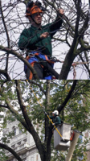
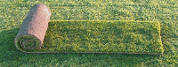
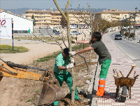

Jardinería
Presentación de la empresa
ZAMARGUILEA INTEGRAL GARTEN, S.L. es una empresa de jardinería con sedes en Funes (Navarra), con viveros en Villafranca de Navarra especializada en la creación y mantenimiento de zonas verdes, tanto públicas como privadas.
Desde los inicios de la familia Zamarguilea en las áreas verdes, por el 1885, ha evolucionado pasando de padres a hijos hasta marcar claramente un sector que son los VIVEROS y otro que es la gestión de áreas de Ocio.
Esta última ha sido la más desarrollada e imnovadora, pasando de una jardinería tradicional, a la introducción de nuevos productos y formas de ver estos espacios, traídos de las ferias más imnovadoras a nivel Europeo, e introduciendo todos los elementos que se desean en un jardín, desde lo más sencillo, hasta aquellos que pueden instalar, Piscinas, Cubierta, Zonas de Juego, etc
Estudio, Diseño y Creación
Diseño y ejecución de proyectos de jardinería
Realizamos estudios previos al diseño como análisis de tierra, clima y entorno consiguiendo un proyecto acertado. Porque sabemos que cada cliente es diferente realizamos diseños pers leer más
Riegos
Paisajismo adaptado a sus necesidades
El exito de un jardín viene de la mano de un buen sistema de riego. Damos solución a cualquier tipo de problema, incluso con servicio de Zahori para la busqueda de agua en jardines sin abas leer más
Mantenimientos y podas
Trabajos de poda y limpieza, incluso en altura
Para obtener un buen estado vegetal hay que atender sus podas y limpiezas, incluso en especies de gran porte, donde somos grandes especialistas en podas de altura leer más
Siembras
Creación de praderas con plantación de Tepes y Siembras
Para la creación de praderas cespitosas, utilizamos la plantación de Tepes o Siembra tradicional, así como Hidrosiembras para zonas complicadas. Estas praderas naturales, se están leer más
Plantaciones
Arboles y Arbustos
De la mano de nuestro vivero pueden ustedes seleccionar las plantas con mayor calidad, para que nuestro especilistas se las planten en su jardín leer más